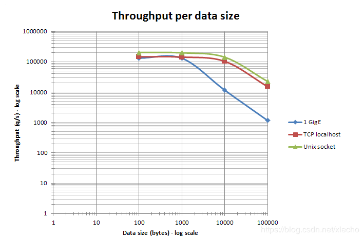
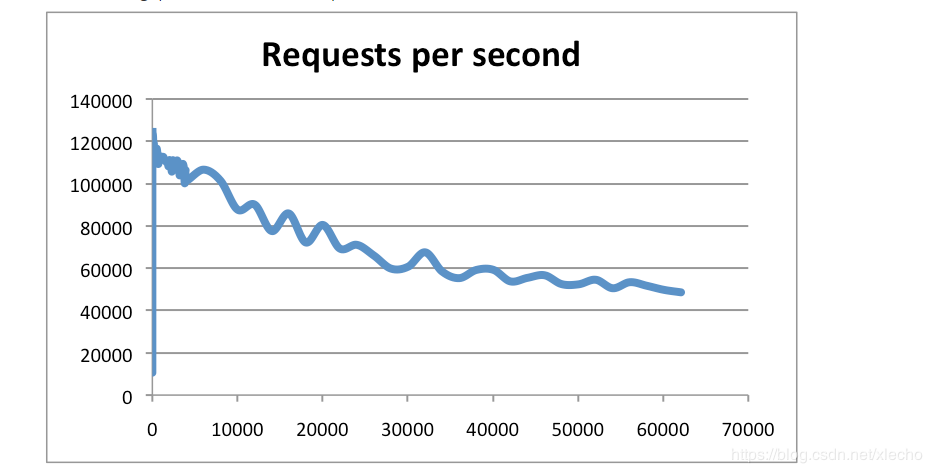
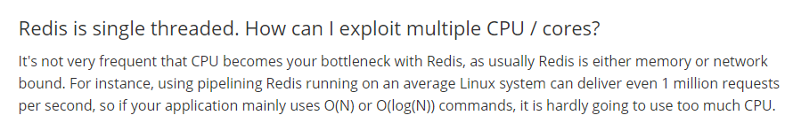

echo编辑整理，欢迎转载，转载请声明文章来源。欢迎添加echo微信(微信号：t2421499075)交流学习。 百战不败，依不自称常胜，百败不颓，依能奋力前行。——这才是真正的堪称强大！！！
Redis的实际被应用都是因为它的性能，在众多缓存中Redis也是一个比较快的中间件，而且它是单线程操作，没有过的内存开销，给程序带来了更多的扩展空间。
在保证网络通畅的情况下，相同的CPU和相同的Redis版本，处理不同大小的数据，Redis的吞吐量如下图所示，该图来自Redis的官方网站。我们可以在网站中看到。Redis在处理1000字节的数据的时候，都是稳定位置吞吐量在10w，当处理的数据不断增大的时候，吞吐量才慢慢开始下降。

图片来自redis官网
下图是提供的QPS测试图，官方提供的数据是可以达到100000+的QPS（每秒内查询次数）。

图片来自redis官网
我们从上面的介绍里面我们看到了Redis是一个纯kv的操作。并且Redis绝大部分请求是纯粹的内存操作，所以速度非常快。数据存在内存中，类型与存在hashMap中，那么为什么那么快呢？我们可以一起来看一下几种常用数据结构的对比，和他们的优势。
| 数据结构 | 操作 | 时间复杂度 |
|---|---|---|
| List | insert | O(N) |
| List | select | O(1) |
| Set | insert | O(1) |
| Set | select | O(1) |
| HashMap | insert | O(1) |
| HashMap | select | O(1) |
从上图我们可以看出，HashMap的优势就是查找和操作的时间复杂度都是O（1）,所以Redis内部采用这种结构能够从根本上获得足够的优势，当让，Redis的快速不仅仅是数据结构成就的，还有单程成和异步I/O
Redis使用单线程就够了！我们可以看到下图中官网的描述，Redis的使用瓶颈并不是CPU，它主要受到内存和网络的限制。例如，使用在一般Linux系统上运行的流水线Redis每秒可以发送一百万个请求，因此，如果您的应用程序主要使用O（N）或O（log（N））命令，则几乎不会使用过多的CPU 。

从描述中我们可以看到，Redis在使用的时候，使用单线程就已经能够获取Redis足够使用的CPU资源，主要的瓶颈在于内存。但是单线程为什么能够做到这么快的速度的呢？
从上面官网的介绍我们看到了，Redis的瓶颈不在线程，不在获取CPU的资源，所以如果使用多线程就会带来多余的资源占用。比如上下文切换、资源竞争、锁的操作。
对于I/O阻塞可能有很多人不知道，I/O操作的阻塞到底是怎么引起的，Redis又是怎么解决的呢？
做一个有底线的博客主